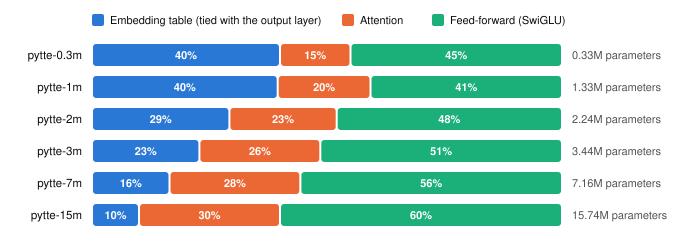
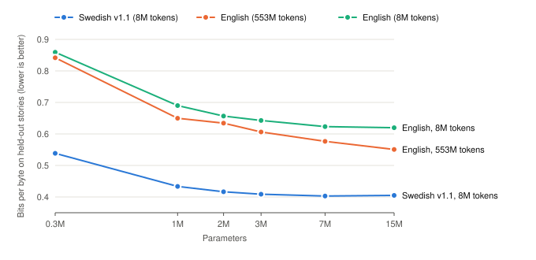
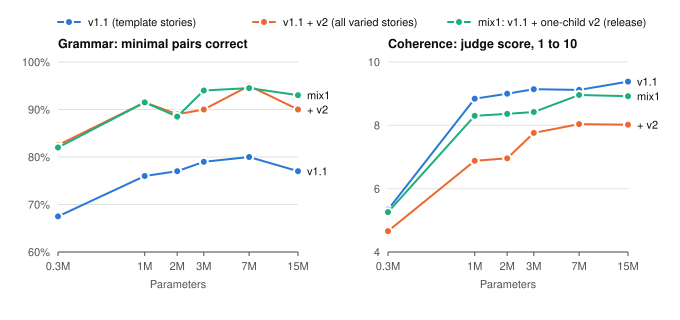
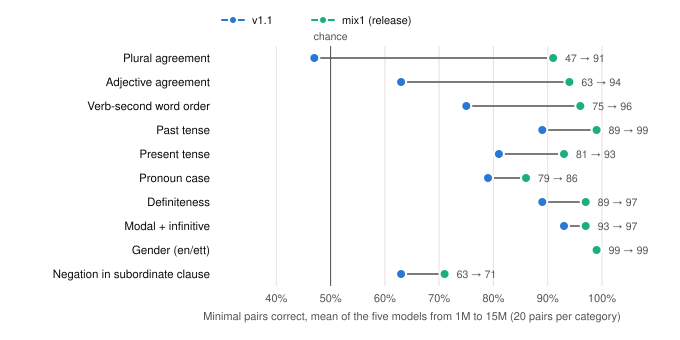
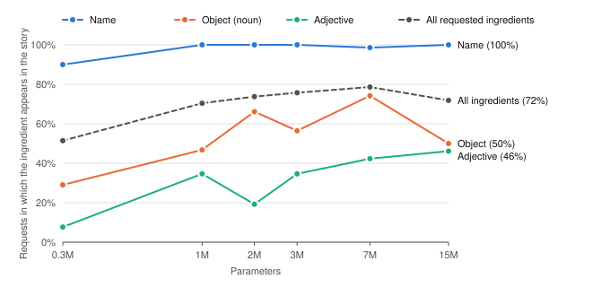
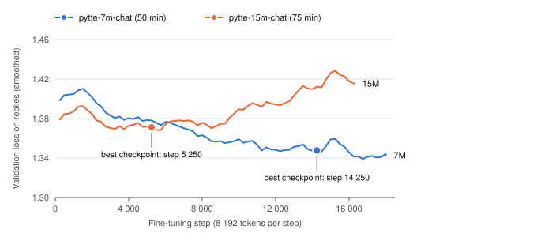

A family of six models from 0.3 to 15.7 million parameters, a synthetic Swedish story corpus, and twenty measured findings
November 2026 · Code, models, data and lab log: github.com/dragon6sic6/pytte
How small can a language model be and still write coherent Swedish? We build one from nothing to find out. Pytte is a family of six Llama-style decoders with 0.33 to 15.7 million parameters, written from scratch and trained on a single MacBook Pro in 5 to 30 minutes each, on SagoSvenska, a corpus of 120 000 Swedish children's stories that we generated locally with an open model at zero cost. No pretrained weights are used anywhere. We define a quality floor before making a size claim: bits per byte on held-out stories, a 200-pair Swedish minimal-pair grammar test, a judge model, and the share of stories that end on their own. A 0.33M-parameter model writes grammatical Swedish sentences; coherent stories need about 1M, and on 8M tokens of template-like data the family stops improving at 3M. English twins trained with identical code and budgets show that this ceiling belongs to the data, not the language. The central result is about data: plural agreement sat at chance in every model until 40% of the generation prompts asked for plural objects, after which it reached 85–100% at every size, while a construction that no prompt asked for did not move. Grammar in a tiny model is a property of the data and can be steered category by category; the price of more varied data is coherence, and a mixed corpus recovers most of it. We then instruction-tune the family on requests synthesised from the stories' own recipes, which costs nothing to produce, and find that following a request grows with capacity and arrives later in training than the language does. Finally the models are exported to one int8 file each (0.4 to 16 MB) and run in under 500 lines of dependency-free C at 1 900 to 38 000 tokens per second on one core, and in plain JavaScript in the browser, with no measurable loss. Everything was built with an AI coding assistant directed by one person; the report says what each did and lists the mistakes.
Large language models are trained on thousands of processors for months, and for most people who use them the inside is opaque. The same architecture, however, scales down. TinyStories [1] showed that models with a few million parameters write coherent English when the training text is restricted to what a small child understands, and hobby projects have since trained such models on a laptop in minutes [3, 4]. This report asks the same question for Swedish and answers it with measurements: what is the smallest model that writes coherent Swedish, what does it cost to get there, and what decides the answer?
The motivation is understanding. Every part of the system was built in the open, from the tokenizer to the sampling loop, and a lab log was written in parallel with the work so that each decision, measurement and mistake is on record. The project had three fixed constraints: no budget at all (no cloud compute, no paid APIs), one consumer laptop, and no reuse of existing weights. The models are small language models, not large ones; what they share with large models is the architecture and the training method.
A size claim without a quality floor is meaningless: Transformers with 25 000 parameters have been run on a Commodore 64, and they do not write stories. We therefore define the floor first (Section 5) and then ask how small a model can be while clearing it. Our contributions are:
We do not claim the first Swedish TinyStories. A Linköping University course published a machine-translated TinyStories and fifteen Swedish models in December 2024 [5], without a licence, a model card or a report, and a 133 000-parameter byte-level Swedish model exists that does not produce intelligible text [6]. To our knowledge Pytte is the first open, documented attempt with a defined quality floor and a Swedish/English comparison.
Small models on simple text. Eldan and Li [1] generated millions of short English stories with GPT-3.5 and GPT-4 from a small vocabulary and showed that models below 10M parameters trained on them produce fluent, consistent text, with coherence appearing at a few million parameters. Karpathy's llama2.c [3] made the Llama architecture [10] at this scale runnable in one C file, and several writers have since asked what can be trained on a laptop in minutes [4]. We follow this line and reuse its method of generating data from sampled ingredients; our English twins are trained on TinyStories V2 itself.
Swedish language models. GPT-SW3 [8] and SweCTRL-Mini [9] are far larger Swedish generative models trained on large corpora. At the small end we found the two items mentioned above [5, 6] and a multilingual set with about 560 Swedish stories [7], too few to train on. None of them reports how small a Swedish model can be.
Evaluation. BLiMP [2] introduced minimal pairs for English: a model is right when it assigns the grammatical member of a pair a higher probability. We build a Swedish test of the same kind and take care that the two members have equal length. Using a language model as a judge of story quality follows TinyStories; we report its known weaknesses in Section 8.
The stories had to be written by a model whose licence allows training on its output, and it had to run on the laptop. We tested four candidates in 4-bit quantisation with MLX (Table 1). Speed was not the deciding factor: the two fastest models wrote Swedish with invented words and wrong genders, and the licence of Gemma 3 makes a model trained on its output a derivative bound by its terms. Gemma 4 12B writes natural, nearly error-free children's Swedish and is released under Apache-2.0 [12]. With a prompt-prefix cache and batches of 24 stories it produced about 980 stories per hour.
| Model (4-bit, MLX) | Stories per hour | Swedish | Licence for training on output |
|---|---|---|---|
| Qwen3 4B | about 1 700 | Rejected: invented words (“skrök”, “fallde”) | Apache-2.0 |
| Gemma 3 4B | about 1 900 | Good, small errors | Gemma terms: output-trained models are derivatives |
| Gemma 4 E4B | about 1 800 | Rejected: wrong gender and forms (“ett litet drake”) | Apache-2.0 |
| Gemma 4 12B-it (QAT) | 980 with prefix cache | Excellent, natural | Apache-2.0 |
| Gemma 4 26B A4B (QAT) | 1 550 | Excellent, more dialogue, fewest errors | Apache-2.0 |
Table 1. Generator candidates on an M2 Pro with 32 GB. The 26B mixture-of-experts model (4B active parameters) became usable after the first corpus was finished and wrote the second.
Each story is produced from a recipe sampled independently per prompt: a child's name, a place, a noun, a verb, an adjective, one story feature (for example a dialogue or a small problem) and a target length of 80 to 180 words, with the instruction to use only words a small child knows. There are about ten million combinations. Generation ran for 54 hours and gave 60 000 stories of 110 words on average. Keeping a laptop generating for two days required a cache limit and a memory limit in MLX (a Metal out-of-memory error appeared after 2.7 hours without them), a restart loop, and a battery guard, because a 30 W charger could not keep up with the GPU.
Cleaning normalises markdown and quotation marks, drops stories that are too short, not in Swedish, or flagged by a safety word list (an early prompt asking for “a sad ending” had produced a story in which a child drowns; the feature was reworded to “a little sad but safe, nobody is hurt”), and removes exact and near duplicates with MinHash. There were none: 60 000 stories from one model did not contain a single near duplicate, because every prompt samples its ingredients.
A bug we shipped. The 4-bit generator sometimes emits its own end-of-image special token in the middle of a word (“gung<image|>a”). It happened in 12% of the raw stories, the first cleaner stripped only one character of it, the tokenizer learned a token for the remains, and 5 to 14% of the stories written by the first Swedish models contained the debris. The generator now blocks every special token at sampling time, the cleaner repairs the word, 8 835 stories were repaired, and all Swedish models were retrained. This corrected set is v1.1; numbers from the faulty v1.0 are kept in the lab log and used in Section 5.3 as an accidental measurement of noise.
The v1.1 training set has 59 224 stories but only 9 149 distinct first sentences. “Det är en fin dag.” (It is a fine day.) opens 9 743 of them, and 82% begin with the child's name followed by lives, is or goes. A pilot of 500 stories at temperature 0.85 instead of 0.6 left this almost unchanged (80% name openings, 4-gram reuse between stories 29% → 27%). The template comes from the prompt: given the same six kinds of ingredient, the generator solves the task the same way every time.
The second recipe therefore randomises what the first held fixed: one of 14 opening types (a line of dialogue, a sound, a question, the weather, the middle of an action, and so on), past or present tense with equal probability, one to three children or a child with an adult, a plural object in 40% of the prompts “so that the inflection shows”, first-person narration in 12% of the one-child stories, one or two of 29 features, one of 11 ending types, and a length of 60 to 220 words. It also forbids the three most common v1 openings. Written by Gemma 4 26B A4B at temperature 0.85, 60 000 stories took 39.7 hours over four runs. On 5 000 random raw stories per set, 4-gram reuse between stories fell from 51% to 37%, distinct four-word openings rose from 40% to 54%, the most common first sentence went from 16% of the corpus to 2%, and name openings from 82% to 4%. No special token leaked.
| Set | Train / val / test stories | Words | Words per story | Distinct words | Words covering 90% | Train tokens |
|---|---|---|---|---|---|---|
| v1.1 | 59 224 / 599 / 603 | 6.67M | 110 | 11 619 | 527 | 8.1M |
| v2 | 59 045 / 611 / 567 | 6.98M | 116 | 13 529 | 718 | – |
| v1.1 + v2 | 118 269 / 1 210 / 1 170 | 13.65M | 113 | – | – | 17M |
| mix1 (release) | 85 764 / 853 / 865 | 9.80M | 112 | – | – | 12M |
Table 2. SagoSvenska. mix1 is all of v1.1 plus the 26 540 v2 stories with a single child; Section 6.3 explains why. Splits are deterministic on a hash of the text. Tokens are counted with the 4 096-entry tokenizer of each set.
Pytte is a decoder-only Transformer in the Llama style [10], written in MLX [11] in under 200 lines: token embedding, then N blocks of RMSNorm, causal self-attention with rotary position embeddings, a residual connection, RMSNorm, a SwiGLU feed-forward layer and a second residual connection, then a final RMSNorm and an output layer whose weights are tied to the embedding table. Generation uses a key-value cache. The smallest model uses grouped-query attention with two key-value heads for four query heads. There are no biases and no dropout. The context is 512 tokens; training sequences are 256.
The tokenizer is byte-level BPE trained on the stories, with 4 096 entries (2 048 for the smallest model) and one special token, <|endoftext|>. A small vocabulary matters at this scale: in the two smallest models the embedding table is 40% of all parameters (Figure 1), and a tokenizer with 65 535 entries, as in the earlier Swedish models [5], would leave almost nothing for the layers.
| Model | dim | layers | heads | ff | vocab | params | w/o embed. | embed. share | minutes | peak lr |
|---|---|---|---|---|---|---|---|---|---|---|
| pytte-0.3m | 64 | 4 | 4 (2 kv) | 192 | 2 048 | 0.33M | 0.20M | 40% | 5 | 0.002 |
| pytte-1m | 128 | 4 | 4 | 352 | 4 096 | 1.33M | 0.80M | 39% | 8 | 0.002 |
| pytte-2m | 160 | 5 | 5 | 448 | 4 096 | 2.24M | 1.59M | 29% | 10 | 0.002 |
| pytte-3m | 192 | 6 | 6 | 512 | 4 096 | 3.44M | 2.66M | 23% | 12 | 0.002 |
| pytte-7m | 288 | 6 | 6 | 768 | 4 096 | 7.16M | 5.98M | 16% | 20 | 0.001 |
| pytte-15m | 384 | 8 | 6 | 1024 | 4 096 | 15.74M | 14.16M | 10% | 30 | 0.001 |
| pytte-40m (defined, not trained) | 512 | 12 | 8 | 1408 | 4 096 | 40.65M | 38.55M | 5% | – | – |
Table 3. The model family. Sizes are always given with and without the embedding table. “Minutes” is the wall-clock training budget used for every base model of that size in this report.

Figure 1. Where the parameters are. In the smallest models the embedding table takes 40% of the budget; at 15.7M it is 10% and the feed-forward layers hold 60%.
All models are trained from random initialisation (normal, standard deviation 0.02, residual projections scaled down by the depth) with AdamW (β = 0.9 and 0.95, weight decay 0.1), batches of 32 sequences of 256 tokens, gradient clipping at 1.0, and a learning rate that warms up over 5% of the run to 2·10−3 (10−3 for the two largest models) and follows a cosine to 10−4. The schedule is defined on a time budget rather than a step count: 5, 8, 10, 12, 20 and 30 minutes for the six sizes. This makes runs comparable across data sets on the same machine and makes the learning-rate schedule correct whatever the throughput. Validation loss is measured every 250 steps and the checkpoint with the best validation loss is kept, so memorisation shows in the curve without damaging the released model. Every family uses seed 0.
The hardware is a MacBook Pro with an M2 Pro (10 cores, 32 GB). On identical models MLX trained 1.6 times faster than PyTorch on the Metal backend (161 000 against 99 000 tokens per second at 1.3M parameters), so MLX is used throughout. Average throughput including evaluation was 274 000 tokens per second for the smallest model and 27 000 for the largest. Training the six release models takes 85 minutes in total.
Quality claims are made on random samples only. Appendix B prints the first evaluation sample of every release model, whatever it happens to be.
The criteria were written down before the first model was trained: grammar and coherence as graded by a judge with a fixed prompt, minimal pairs, novelty against the training set, and bits per byte, all on random samples, with the working thresholds of 80% on the first two and 70% on the third. In the form we could measure, a model “writes coherent Swedish” when the judge gives it at least 8 of 10 for both grammar and coherence and it gets at least 70% of the minimal pairs right. Two parts of the original plan were not carried out: we graded 50 to 100 samples per model rather than 200, and no blind rating by Swedish speakers was done. The release models from 1M parameters clear the floor (Table 7). The 0.33M model clears grammar (8.7) and minimal pairs (82%) but not coherence (5.3), and is described as writing Swedish sentences rather than telling stories.
Two accidents and one experiment measured the noise. Retraining on the repaired data (v1.0 → v1.1, same seed, same tokenizer balance) changed bits per byte by at most 0.005 and the judge's scores by at most 0.5, but moved the minimal-pair total by up to 10 points for the same configuration. Three seeds of the 0.33M model then gave 67.5, 74.5 and 80.0% at bits per byte of 0.538, 0.535 and 0.539, while three seeds of the 1M model gave 76.0, 76.0 and 77.0%. The movement sits in the categories where the model chooses between two word orders or two function words by a small margin, and 20 pairs per category do not pin those down. We draw two rules from this: the test is reliable from 1M parameters and must be reported as a range at 0.33M, and a difference of less than ten points between two Swedish models is not a result unless it is backed by another measure. The effects reported in Section 6.3 are 12 to 50 points.
Three measurement errors in our own training code were found the same way, by numbers that did not agree with each other: a bits-per-byte figure divided by the wrong token count (2.4 times too high in the first table), a time budget that counted the minutes the laptop slept, and a data loader that read random windows from a memory-mapped file on a USB disk and was I/O-bound. Each published number has since been computed in two ways.
Already the 0.33M model, with 197 000 parameters outside the embedding table and five minutes of training, produces grammatical sentences: “Elsa går ut på en stor äng. Det finns många fina blommor där. Blommorna är gula och vita. Elsa ser en liten fjäril.” (the first of its evaluation samples). The judge gives its stories a coherence of 5.3. The large step is from 0.33M to 1M, where bits per byte falls from 0.54 to 0.43 and coherence rises to 8.8. From 3M upward every model reaches the same validation loss (Table 4, columns sv). With 8M tokens seen six to ten times, the unpredictability of the data itself is reached at about 3M parameters: more model buys nothing.
The grammar test tells the same story from another side and adds a detail. Gender, modal verbs and tense are at 90–100% from the smallest sizes, but plural agreement is at chance in all six models (35 to 55%). The v1 stories are about one child, one dog and one ball; the models have hardly seen a plural.
The same code, configurations and time budgets were run on TinyStories V2 (en, 553M tokens, of which each model sees about a tenth of an epoch) and on a random subset of TinyStories of exactly SagoSvenska's size (en8m, 40 027 stories, 8.1M tokens, six to nine epochs). The subset is the control: it has the Swedish corpus's size and epoch count and the English corpus's language and style.
| Bits per byte | Minimal pairs, % | Judge coherence | Ends on its own, % | |||||||||
|---|---|---|---|---|---|---|---|---|---|---|---|---|
| Model | sv | en | en8m | sv | en | en8m | sv | en | en8m | sv | en | en8m |
| pytte-0.3m | 0.538 | 0.842 | 0.859 | 67.5 | 83.5 | 79.0 | 5.3 | 2.9 | 2.8 | 86 | 67 | 55 |
| pytte-1m | 0.433 | 0.650 | 0.690 | 76.0 | 90.0 | 88.0 | 8.8 | 4.5 | 4.9 | 95 | 73 | 77 |
| pytte-2m | 0.417 | 0.634 | 0.657 | 77.0 | 90.5 | 91.5 | 9.0 | 4.9 | 4.9 | 93 | 83 | 72 |
| pytte-3m | 0.409 | 0.606 | 0.643 | 79.0 | 91.5 | 90.0 | 9.1 | 6.1 | 5.9 | 97 | 71 | 77 |
| pytte-7m | 0.403 | 0.576 | 0.623 | 80.0 | 90.5 | 92.5 | 9.1 | 5.6 | 5.1 | 93 | 82 | 72 |
| pytte-15m | 0.405 | 0.551 | 0.620 | 77.0 | 94.0 | 93.0 | 9.4 | 7.3 | 6.0 | 98 | 80 | 88 |
Table 4. Swedish (v1.1) and its English twins, same code and wall-clock budgets. en is all of TinyStories V2, en8m a subset of SagoSvenska's size. Bits per byte is not comparable across languages; the shape of each column is.

Figure 2. Scaling with model size. Swedish on 8M tokens is flat from 3M parameters, English on 8M tokens from 7M, and English on 553M tokens keeps improving. The gap between the two English curves grows from 0.02 to 0.07 bits per byte.
Four things follow. First, the ceiling is in the data: on 8M English tokens the curve flattens at 7M parameters (0.623 → 0.620), on the full corpus it keeps falling to 15.7M, and the distance between the two grows with size. Small models do not notice whether the corpus has 8M or 553M tokens; large ones do. Second, the low Swedish bits per byte is a property of the data and not of the language: at equal size and epochs English sits 0.2 bits per byte higher, because TinyStories is less predictable than template stories generated at temperature 0.6. Third, grammar does not need 553M tokens: en8m passes the English minimal pairs as well as en (79–93% against 84–94%), so the Swedish models' 68–80% is not caused by the small corpus. Fourth, the last grammatical skill to arrive is number agreement in both languages: Swedish plural and adjective agreement, English subject–verb agreement.
What the twins cannot say is how many parameters Swedish needs compared with English, since the corpora differ in generator, temperature and length. What they do say is that coherent text appears at the same size in both languages, that the cliff between 0.33M and 1M exists in both, and that the 0.33M Swedish model holds a story together better than its English twins (coherence 5.3 against 2.8 on equal data) because its text is simpler, not because Swedish is easier.
We retrained all six models on v1.1 + v2 with the same budgets, learning rates and seed, so that the data is the only difference, and then a third time on mix1. Table 5 and Figures 3 and 4 give the result.
| Minimal pairs, % | Plural pairs, % | Judge coherence | Novel 7-grams, % | |||||||||
|---|---|---|---|---|---|---|---|---|---|---|---|---|
| Model | v1.1 | +v2 | mix1 | v1.1 | +v2 | mix1 | v1.1 | +v2 | mix1 | v1.1 | +v2 | mix1 |
| pytte-0.3m | 67.5 | 82.5 | 82.0 | 35 | 85 | 75 | 5.3 | 4.7 | 5.3 | 50 | 65 | 61 |
| pytte-1m | 76.0 | 91.5 | 91.5 | 35 | 95 | 90 | 8.8 | 6.9 | 8.3 | 44 | 61 | 53 |
| pytte-2m | 77.0 | 89.0 | 88.5 | 55 | 95 | 95 | 9.0 | 7.0 | 8.4 | 45 | 60 | 54 |
| pytte-3m | 79.0 | 90.0 | 94.0 | 50 | 95 | 90 | 9.1 | 7.8 | 8.4 | 45 | 59 | 54 |
| pytte-7m | 80.0 | 95.0 | 94.5 | 45 | 100 | 90 | 9.1 | 8.0 | 9.0 | 44 | 61 | 54 |
| pytte-15m | 77.0 | 90.0 | 93.0 | 50 | 100 | 90 | 9.4 | 8.0 | 8.9 | 44 | 58 | 53 |
Table 5. The same six models on three corpus mixes. Novel 7-grams is the share of 7-grams in the model's own stories that do not occur in its training set.

Figure 3. Varied data raises grammar by 12 to 15 points at every size and costs coherence; the mix with one-child stories keeps the grammar and recovers most of the coherence, all of it from 7M parameters.
Plural agreement went from chance to 85–100% in every model, including the smallest. The only thing that changed is that 40% of the v2 prompts ask for several objects in the plural. Adjective agreement rose from 55–75% to 80–95%, verb-second word order from 70–80% to 80–100%, and past tense, which half of v2 is written in, from 75–95% to 95–100%. The total rose 12 to 15 points at every size, far outside the noise of Section 5.3. One category did not move: the position of negation in a subordinate clause stayed between 40 and 85%, as noisy as before. No recipe asks for that construction, so no data taught it. A feature that is missing from the training data is not learned at any model size, and one that is present is learned already at 0.33M parameters. This is a stronger and more useful statement than “Swedish plurals are hard”.

Figure 4. Per-category grammar before and after the varied stories were added, averaged over the five models from 1M to 15M. The categories that the v2 recipe exercises move; negation in subordinate clauses, which no recipe mentions, stays inside the test's noise.
The v1.1 models had learned the template, not the language. Scored on v2 validation text, a model trained on v1.1 costs 1.06 to 1.08 bits per byte, more than twice its 0.41 to 0.44 on its own validation set (Table 6). Models trained on both sets cost 0.52 to 0.58 on v2 text and only 0.00 to 0.02 more on v1 text. Same time budget and the same number of tokens seen, but half as many passes over twice the data, gave a model that generalises; its share of novel 7-grams rose from 44–50% to 58–65%.
| Trained on v1.1 | Trained on v1.1 + v2 | Trained on mix1 | ||||
|---|---|---|---|---|---|---|
| Model | v1 text | v2 text | v1 text | v2 text | v1 text | v2 text |
| pytte-1m | 0.436 | 1.080 | 0.460 | 0.584 | 0.443 | 0.652 |
| pytte-3m | 0.410 | 1.063 | 0.430 | 0.551 | 0.418 | 0.625 |
| pytte-15m | 0.407 | 1.068 | 0.405 | 0.522 | 0.400 | 0.603 |
Table 6. Bits per byte on the v1 and v2 validation sets, each tokenized with the model's own tokenizer. A model trained only on template stories pays more than double on freer text.
The price is coherence. The judge gives the models trained on v1.1 + v2 between 1.1 and 1.9 points less coherence from 1M upward, with grammar unchanged. Its comments on the lowest-scoring stories point at the same thing each time: characters are swapped in the middle of the story. The v2 recipe has two or three children in 55% of its stories, and a model with 128 to 384 dimensions loses track of who is who. Doubling the training time on the merged data (16 and 24 minutes for the 1M and 3M models) left coherence where it was (6.9 → 7.0 and 7.8 → 7.9), so the loss is a property of the data mix and not of under-training.
A mix recovers it. mix1 keeps all of v1.1 and adds only the v2 stories with a single child. The plural, tense and first-person prompts are independent of the number of characters, so they come along. Grammar stays where the full merge put it (88.5 to 94.5% from 1M, plural 90–95%), coherence returns to 8.3–8.4 at 1M to 3M and to 9.0 and 8.9 at 7M and 15M, against 9.1 and 9.4 for v1.1, and generalisation lies between the two other mixes as expected. From 7M the model has the capacity to hold a freer story together; below that it pays about half a point for not having memorised a template. We consider that the right trade and release the mix1 family (Table 7). The other two families are kept as comparisons, because template against variety against mix is itself a result.
| Judge, 1–10 | |||||||||||
|---|---|---|---|---|---|---|---|---|---|---|---|
| Model | min | tokens seen | bits/byte | min. pairs, % | gram. | coh. | creat. | errors/story | ends, % | novel 7-gr., % | words |
| pytte-0.3m | 5 | 87M | 0.619 | 82.0 | 8.7 | 5.3 | 2.7 | 1.30 | 92 | 61 | 142 |
| pytte-1m | 8 | 83M | 0.493 | 91.5 | 9.5 | 8.3 | 3.0 | 0.46 | 95 | 53 | 131 |
| pytte-2m | 10 | 54M | 0.478 | 88.5 | 9.6 | 8.4 | 3.0 | 0.30 | 97 | 54 | 128 |
| pytte-3m | 12 | 54M | 0.466 | 94.0 | 9.4 | 8.4 | 3.1 | 0.50 | 94 | 54 | 129 |
| pytte-7m | 20 | 55M | 0.451 | 94.5 | 9.6 | 9.0 | 3.2 | 0.35 | 99 | 54 | 135 |
| pytte-15m | 30 | 47M | 0.445 | 93.0 | 9.5 | 8.9 | 3.1 | 0.36 | 96 | 53 | 133 |
Table 7. The release family, trained on mix1. Bits per byte is on the mix1 validation set and is not comparable with the v1.1 column of Table 4.
A model that continues stories cannot be asked for one. To turn the release family into models that take a request, we fine-tune them on conversations, and we build those conversations without generating any new text. Every training story carries the recipe that produced it, so a request can be written from the recipe: a story generated from the name Sixten and the noun trappa becomes the reply to “Kan du berätta en saga om Sixten och en trappa?”. A small lexicon derived from the corpus supplies the article of each noun and the present tense of each verb. Requests use a weighted choice of openers and zero to three ingredients, with punctuation and capitalisation varied.
The format is plain text with no new special tokens, so that it works unchanged in C and in the browser:
<|endoftext|>Du: Berätta en saga om en älg. Pytte: <story><|endoftext|>
The corpus of 83 474 conversations (15.2M tokens) consists of single requests (52%), a story cut at a sentence boundary with a follow-up such as “Vad händer sedan?” and the rest of the story as the second reply (34%), a follow-up after a complete story answered with a new story about the same child (6%), “another one!” (5%), and small talk with fixed short replies (2%): greetings, “who are you?”, and questions outside the model's world, which are answered with an offer to tell a story. The loss is computed on the replies only. Fine-tuning starts from the release checkpoint with 2.5 times the pretraining budget and a peak learning rate of 3·10−4.
Because the request was built from known ingredients, following can be scored automatically: for 100 held-out requests with at least one ingredient we check whether the name, the noun, the adjective, the verb and the place appear in the reply. A pilot and two sweeps on the 3M model shaped the final settings. A higher learning rate knocked the model out of its minimum; follow-ups after a complete story produced one sentence until the episode conversations were added; and the noun was followed in only 37 to 45% of replies whatever the learning rate or time, until requests were made denser (two or three ingredients in most of them), which gave 11 points at equal budget, and the budget was extended, which gave 17 more.
| Requested ingredients used, % | Follow-up | Small talk | Story quality | ||||||||||
|---|---|---|---|---|---|---|---|---|---|---|---|---|---|
| Model | min | epochs | followed | all | name | place | object | verb | adj. | same child, % | short | pairs, % | judge g. / c. |
| pytte-0.3m-chat | 13 | 15.3 | 51 | 31 | 90 | 67 | 29 | 24 | 8 | 87 | 6/24 | 81.5 | 8.8 / 6.0 |
| pytte-1m-chat | 20 | 13.6 | 70 | 54 | 100 | 92 | 47 | 53 | 35 | 97 | 20/24 | 93.0 | 9.7 / 8.3 |
| pytte-2m-chat | 25 | 10.3 | 74 | 60 | 100 | 92 | 66 | 41 | 19 | 100 | 16/24 | 86.5 | 9.7 / 8.1 |
| pytte-3m-chat | 25 of 30 | 8.0 | 76 | 57 | 100 | 100 | 56 | 71 | 35 | 100 | 16/24 | 91.5 | 9.7 / 8.7 |
| pytte-7m-chat | 50 | 9.7 | 79 | 66 | 99 | 92 | 74 | 53 | 42 | 100 | 22/24 | 91.5 | 9.6 / 9.3 |
| pytte-15m-chat | 75 | 8.8 | 72 | 56 | 100 | 96 | 50 | 41 | 46 | 97 | 23/24 | 88.5 | 9.7 / 8.9 |
Table 8. The chat family. “Followed” is the share of all requested ingredients that appear in the reply, “all” the share of replies containing every requested ingredient. The 3M run was stopped at 25 of 30 minutes. Small talk is the number of 24 greetings, identity questions and off-topic questions answered with a short reply. Minimal pairs and judge scores are for the chat models themselves.

Figure 5. Instruction following by ingredient. The name is carried through the story at almost every size; an object must be fetched from the request in the middle of the story and needs capacity; the adjective is hardest. The 15M model's drop is the overfitting described below.
Following grows with capacity, and the story does not suffer. At equal epochs the larger model follows more: the 7M model after ten epochs uses 79% of the requested ingredients against 74% for the 2M model after ten, the object 74 against 66% and the adjective 42 against 19%. The 0.33M model keeps the name (90%) but cannot bring in an object from the request (29%) even after fifteen epochs; that is capacity, not time. The order of difficulty is the same at every size: the name and the place, which open the story, come first, then the object and the verb, and last the adjective, which has to land in front of a noun. Follow-ups work from 1M (new text in every case, the same child in 97–100%), small talk needs 1M and is solid from 7M (22 of 24). Story quality is unchanged or better: the judge's grammar is 9.6 to 9.7 at every size from 1M, coherence is 0.3 higher at 3M and 7M, where a given child and place make a story easier to hold together, and minimal pairs stay within the noise of the base models.
The largest model overfits, and following arrives later than language. The 15.7M model's validation loss reaches its minimum after three epochs and rises for the rest of the run, while the 7M model's keeps falling (Figure 6). The best-validation checkpoint of the 15M model is therefore an early one, and it follows 72% of the ingredients, less than the 7M model and about as much as the 1M model after fourteen epochs. Validation loss measures the story text, not the following: a 15M checkpoint from an interrupted run with the same validation loss followed 69%.

Figure 6. Validation loss during instruction tuning (five-point moving average). Fifteen million parameters memorise 12.7M loss tokens within three epochs; seven million do not in ten.
At a fixed budget, repetition teaches following, not variety. Since requests are free, we tripled the conversation data by drawing three different requests, split points and conversation types per story (244 562 conversations, 45M tokens) and retrained the two largest models with the same budgets (Table 9). The 15M model gained 3 points and overfitted later, but still overfitted. The 7M model lost 7 points, and 21 on the object, although it took as many steps and reached a slightly lower validation loss: it now saw each story–request pair three times instead of ten. Carrying a word from the request into the story is learned from repeated passes over the same pairs. An error of ours limits this experiment: the deduplication step removed almost all small talk from the tripled set (279 lines instead of 2 035), so those two models answer a greeting with a story; instruction-following figures are not affected, and the code is fixed. The one-pass models are the released chat family.
| Model | Chat data | epochs | best val. loss | at step | final val. loss | followed, % | object, % | adj., % | min. pairs, % |
|---|---|---|---|---|---|---|---|---|---|
| pytte-7m-chat | 1 pass, 15M tok | 9.7 | 1.327 | 14 250 | 1.350 | 79 | 74 | 42 | 91.5 |
| pytte-7m-chat-x3 | 3 passes, 45M tok | 3.3 | 1.326 | 18 000 | 1.345 | 72 | 53 | 38 | 92.5 |
| pytte-15m-chat | 1 pass, 15M tok | 8.8 | 1.358 | 5 250 | 1.419 | 72 | 50 | 46 | 88.5 |
| pytte-15m-chat-x3 | 3 passes, 45M tok | 2.7 | 1.349 | 8 750 | 1.410 | 75 | 56 | 54 | 91.5 |
Table 9. One request per story against three, same time budgets. The models with the lowest validation loss follow requests worst.
Each model is exported with its tokenizer to a single file: a header, the raw bytes of every token, the BPE merge rules as triples of token ids, and the weight matrices as int8 with one scale per row (the normalisation vectors stay in float). The files are four times smaller than the float checkpoints, from 0.38 MB to 16 MB.
run.c is a single file of under 500 lines with no dependencies. It contains the whole forward pass in order: GPT-2 style pre-tokenization as a hand-written scanner over UTF-8 code points, exact BPE by merge rank, embedding, RMSNorm, attention with rotary embeddings, grouped-query attention and a key-value cache, SwiGLU, the tied output layer, and sampling with temperature, top-k and nucleus. It has a story mode, a chat mode with history, a mode that shows tokens, and a mode that returns the log-probability of a text, so that the grammar test can be run through the C code.
The implementation is verified in three layers. Token ids are identical to the Python tokenizer on 300 validation stories and a set of edge cases. A float export reproduces Python's greedy continuation exactly for the 0.33M, 7M and 15M models, and the minimal-pair score computed through run.c equals Python's to the decimal. With int8 weights and int8 activations (one scale per vector, accumulation in 32-bit integers) every one of the twelve exported models stays within one point of its float grammar score, and the 7M chat model's instruction following is unchanged within the noise of 100 requests (76 against 79%). Quantisation to eight bits is free at this scale.
The integer path matters for speed more than for size. Our first version multiplied int8 weights by float activations; the compiler did not vectorise that loop and the 7M model ran at 210 tokens per second whatever the optimisation flags. Quantising the activation as well lets the inner loop be an integer dot product, which is vectorised, and the same model runs at 3 900 tokens per second on one core.
| Model | File | run.c, tokens/s, one core | Browser, tokens/s | Min. pairs through run.c, int8 | Python, float |
|---|---|---|---|---|---|
| pytte-0.3m | 0.38 MB | 38 000 | 640 | 81.5% | 82.0% |
| pytte-1m | 1.44 MB | 15 500 | – | 90.5% | 91.5% |
| pytte-2m | 2.37 MB | 10 100 | 220 | 89.5% | 88.5% |
| pytte-3m | 3.59 MB | 6 800 | – | 94.0% | 94.0% |
| pytte-7m | 7.33 MB | 3 900 | 43 (chat) | 94.5% | 94.5% |
| pytte-15m | 15.97 MB | 1 900 | 55 | 92.5% | 93.0% |
Table 10. Exported models on an M2 Pro. Browser figures are single measurements in Chromium, plain JavaScript on one thread, and include warm-up; the 7M figure is from a chat with history.
The browser demo is the same program again in plain JavaScript, without WebAssembly or WebGPU and without a server: it loads the same file, runs in a Web Worker, and with the same seed produces byte-for-byte the same story as run.c. It is roughly 35 to 90 times slower than C and still writes faster than anyone reads. Its three panels are a slider that regenerates one story at each model size from the same seed, a chat with the instruction-tuned models, and a view of the tokens and the next-token probabilities.
What is the smallest model that writes coherent Swedish? On our floor, about one million parameters: the 1.33M release model has a minimal-pair score of 91.5%, a judged coherence of 8.3 and ends 95% of its stories. It trains in eight minutes and its int8 file is 1.4 MB. A third of a million parameters is enough for grammatical Swedish sentences but not for a story. These statements are about children's-story Swedish with a few thousand distinct words; they say nothing about Swedish in general.
The data decides more than the model. Three separate results point the same way. The size at which the curve flattens is set by the corpus (3M parameters for 8M template tokens, 7M for 8M freer tokens, beyond 15M for 553M). Which grammatical categories a model masters is set by what the generation prompts ask for, down to a single line in a recipe. And whether a model holds a story together is set by how many characters the stories contain relative to the model's width. For anyone building a small model for a narrow purpose, the practical order of work is therefore to decide what the model should be able to do, write that into the data recipe, and only then choose a size.
Synthetic data is a controllable instrument. Because every story is stored with its recipe, the corpus can be re-cut after the fact (the one-child mix), instruction data can be derived from it for free, and following can be scored without a judge. The cost of this convenience is the template: a generator given the same kinds of ingredient writes the same kind of story, temperature does not help, and a model trained on the result can look excellent on its own validation set while having learned a form rather than a language. Our v1.1 models did exactly that, and only a second corpus revealed it.
Loss is not the skill. In instruction tuning the checkpoints with the lowest validation loss were not the ones that followed requests best, and models at equal loss differed by ten points in following. A behaviour that depends on a small part of each sequence has to be measured directly.
All code in the repository was written with an AI coding assistant (Claude Code), which also ran the experiments, read the results and kept the lab log, working on the author's laptop over about three weeks. The author set the goal and the constraints (zero budget, one laptop, no outreach), approved each expensive step before it started (the second corpus, each retraining, the choice of release data), read the stories, operated the machine, and decided what to publish. The assistant proposed experiments, including the size-matched control and the one-child mix, and several of the findings came from it noticing that two numbers did not agree. This report was drafted the same way and reviewed by the author.
The record of mistakes is part of the method, and every one of them is in the log with the fix: a metric divided by the wrong count; a time budget on a wall clock that included sleep; a data loader bound by disk I/O; two kernel panics from running generation and evaluation together without swap space; a Metal memory error after hours of generation; the leaked special token in 12% of the first corpus; a prompt that produced a story unsuitable for children; jobs killed by closing the laptop lid; a deduplication step that deleted the small-talk data; and an inner loop that ran 18 times slower than it should because nobody had checked that it was vectorised. None of these was found by inspection of the code. All were found because a number looked wrong, which is the argument for measuring everything twice and for writing the log while the work is done rather than after.
The repository contains the model, tokenizer, training, evaluation and judge code, the story generator and cleaner with both recipes, the instruction-data builder, the export script, run.c, the browser demo, both minimal-pair tests, and the scripts that produced every table. The tables and figures of this report are generated from one results file by paper/build.py. The complete sequence for one model is:
python -m pytte.tokenizer train --input train.jsonl --vocab 4096 --out tok/
python -m pytte.prepare_data --tok tok/ --train train.jsonl --val val.jsonl --out tokens/
python -m pytte.train --config pytte-1m --data tokens/ --tok tok/ --out ckpt/pytte-1m --minutes 8
python -m pytte.eval --model ckpt/pytte-1m --tok tok/ --data tokens/ \
--pairs eval/minimal_pairs_sv.json
python -m pytte.prepare_sft --data stories/ --tok tok/ --out tokens-sft/ --jsonl-out sft/ --dense
python -m pytte.train --init ckpt/pytte-1m --data tokens-sft/ --tok tok/ \
--out ckpt/pytte-1m-chat --minutes 20 --lr 3e-4
python -m pytte.export --model ckpt/pytte-1m-chat --tok tok/ --out pytte-1m-chat.bin
cc -O3 -o run run.c -lm && ./run pytte-1m-chat.bin -chat
The money spent was zero. The time was 54 and 40 hours of local generation for the two corpora, 85 minutes of training for the release family, three and a half hours for the chat family, and a few hours of judging; every other experiment in this report took between 30 minutes and two and a half hours on the same laptop. Models and data are released under Apache-2.0 and CC BY 4.0.
A language model that writes coherent Swedish children's stories fits in 1.4 MB and trains in eight minutes on a laptop, and one a quarter of that size already writes Swedish sentences. Getting there was mostly a question of data. The same six models, trained with the same budgets on three versions of the corpus, differ more from each other than the smallest differs from the largest on any single version: what the stories contain decides which grammar the model has, how well it generalises and how well it keeps a story together. Because the stories were generated from recipes, each of those properties could be changed on purpose and measured, and the same recipes turned the models into ones that can be asked for a story. We hope the corpus, the models and above all the log of how the numbers were obtained are useful to others who want to see inside a language model by building one.
Hur liten kan en språkmodell vara och ändå skriva sammanhängande svenska? Pytte är sex modeller med 0,33 till 15,7 miljoner parametrar, byggda från noll och tränade på en MacBook Pro på 5 till 30 minuter vardera. Träningsdatan, SagoSvenska, är 120 000 svenska barnsagor som genererades lokalt på samma dator med en öppen modell, utan kostnad. Inga färdiga vikter används någonstans.
Vi definierar ett kvalitetsgolv innan vi påstår något om storlek: bitar per byte på osedda sagor, ett grammatiktest med 200 minimala par, en domarmodell och andelen sagor som avslutas av modellen själv. En modell med 0,33 miljoner parametrar skriver grammatiska svenska meningar, sammanhängande sagor kräver ungefär en miljon, och på 8 miljoner token mallartad data slutar familjen bli bättre vid 3 miljoner. Engelska tvillingar tränade med samma kod och samma tid visar att taket sitter i datan och inte i språket.
Huvudresultatet handlar om data. Pluralböjning låg på slumpnivå i alla modeller tills 40 procent av genereringsprompterna bad om föremål i plural, och låg sedan på 85–100 procent i varje storlek, medan en konstruktion som ingen prompt bad om inte rörde sig. Grammatiken i en pyttemodell är en egenskap hos datan och går att styra kategori för kategori. Priset för mer varierad data är sämre sammanhang, och en blandning där sagorna har ett enda barn tar tillbaka det mesta.
Modellerna instruktionstränas sedan på begäranden som byggs ur sagornas egna recept, vilket inte kostar något. Förmågan att följa en begäran växer med modellens storlek och kommer senare i träningen än språket. Till sist exporteras varje modell till en enda fil på 0,4 till 16 MB och körs i under 500 rader C utan beroenden med 1 900 till 38 000 token per sekund, och i ren JavaScript i webbläsaren, utan mätbar förlust. Allt byggdes med en AI-kodassistent under ledning av en person. Rapporten redovisar vad var och en gjorde och vilka misstag som begicks.
| # | Finding | Section |
|---|---|---|
| 1 | A 0.33M-parameter model already writes grammatical Swedish sentences. | 6.1 |
| 2 | On 8M tokens the cliff is below 1M parameters and the plateau starts at 3M. | 6.1 |
| 3 | The first corpus is a template: 59 224 stories, 9 149 distinct first sentences. | 3.3 |
| 4 | On template data the grammar test is flat across sizes and plural agreement is at chance. | 6.1 |
| 5 | Bits per byte cannot be compared across languages; the shape of the curves can. | 6.2 |
| 6 | Number agreement is the last grammatical skill to arrive in both Swedish and English. | 6.2 |
| 7 | The judge finds the Swedish template stories more coherent and less novel than the English ones. | 6.2 |
| 8 | A size-matched English control separates data from language: the ceiling is the corpus. | 6.2 |
| 9 | Temperature does not break a template; the recipe does. | 3.3 |
| 10 | The 26B mixture-of-experts generator is faster and makes fewer errors than the dense 12B. | 3.1 |
| 11 | Token debris in 12% of the data cost nothing measurable, but exposed the grammar test's noise. | 5.3 |
| 12 | Grammar in a tiny model is a property of the data and can be steered per category. | 6.3 |
| 13 | Models trained on the template had learned the template, not the language. | 6.3 |
| 14 | The price of varied data is coherence: characters get swapped. | 6.3 |
| 15 | Coherence does not come back with twice the training time. | 6.3 |
| 16 | Adding only the one-child stories keeps the grammar and recovers most of the coherence. | 6.3 |
| 17 | The mix holds across the family, and from 7M parameters coherence is fully back. | 6.3 |
| 18 | Instruction following grows with capacity, and the story does not suffer. | 6.4 |
| 19 | At a fixed budget, repetition and not variety teaches a model to follow a request. | 6.4 |
| 20 | int8 weights with int8 activations cost nothing measurable and run 18 times faster in C. | 6.5 |
Table A1. The findings in the order they were made. The lab log (FÖRSLAG-OCH-PLAN.md, in Swedish) gives the date, the run and the numbers behind each.
These are not selected. For each release model we print the first of its 100 evaluation samples, generated from the end-of-text token with temperature 0.8 and nucleus 0.95, and for the chat model the first of its 100 evaluation requests.
"Titta här!" sa Alfred i ett stort rött hus.
Alfred såg något i gräset. Det var en liten nyckelpiga. Nyckelpigan var alldeles för stor för hans lilla hand. Alfred tittade noga. Han ville se biet närmare.
"Varför är du arg?" frågade Alfred.
"Jag är inte arg," svarade honom.
Kaninen satt stilla och tittade på Alfred. Den var inte en lampa, utan den ville bara ha glass. Alfred log och sträckte ut handen.
"Tack för mig," sa Alfred.
"Det var ett fint,
Hugo går på den stora bondgården. Det är en solig dag. Hugo ser en stor, röd traktor. Traktorn är jättestor. Hugo blir lite rädd. Han ser en liten hund. Hunden vill gräva i gräset. Hugo vill hjälpa hunden. Han springer snabbt till huset. Han ser en hög med hö. Hugo vill plocka upp en hink. Han börjar gräva i marken. Han gräver och gräver. Hunden kommer fram och viftar på svansen. Hunden viftar på svansen. Hugo ler stort. Nu är han inte rädd längre. Hugo och hunden leker tillsammans i gräset. Det är en fin dag på gården. Hugo är glad.
Ebba bor i en fin lägenhet i stan. Det är en solig dag. Ebba vill rita en stor sol. Hon vill måla en gul sol. Men Ebba är lite slarvig. Hon spiller lite färg på bordet. Nu blir det en stor fläck på bordet. Ebba ser sin kompis och vill ha den. Kompisen är lite envis. Han vill ha den själv. Ebba blir ledsen. Hon vill ha den lök. Men kompisen ler. Han ger Ebba en kram. Nu blir Ebba glad igen. De börjar leka tillsammans. Ebba börjar sjunga en glad sång. Nu är Ebba nöjd.
Linnea går ut på den stora gården. Solen skiner och det är varmt. Det finns många hästar där. Hästarna är stora och bruna. De har långa manar. Linnea ser en liten häst som heter Snöboll. Snöboll är lite blyg. Han tittar på Linnea. Linnea vill se Snöboll närmare. Hon går sakta framåt.
Linnea går sakta framåt. Hon har en morot i sin korg. Hon vill bjuda Snöboll på en morot. Linnea vill vara snäll. Hon öppnar korgen försiktigt. Hon ger moroten till Snöboll. Snöboll äter moroten med glädje. Nu ler Linnea stort. Hon är inte längre rädd. Hon är glad. Snöboll är en snäll vän. De står tillsammans i gräset. Linnea och Snöboll är goda vänner.
Linnea går ut på den stora gården. Solen skiner och det är varmt. Linnea ser en stor häst. Hästen är brun och fin. Linnea har en liten karta i handen. Hon tittar på kartan. På kartan finns en skatt. Linnea går till hästen. Hästen är stor och brun. Den är väldigt snäll. Linnea klappar hästen försiktigt. Hästen är snäll. Linnea vill ge hästen en morot. Hon går till en liten damm. Hon vill fiska lite små fiskar. Linnea sätter sig ner i gräset. Hon tittar på kartan. Plötsligt händer något roligt. Hästen börjar dansa. Den hoppar upp och ner i vattnet. Linnea skrattar högt. Hästen är en mycket glad vän.
Elsa bor i en liten stad. Staden är fin och lugn. Elsa har en liten hund. Hunden heter Bamse. En dag är Elsa lite ensam. Hon sitter på en bänk. Hon tittar på blommorna. Hon hör ett ljud. Det är en liten fågel. Fågeln flyger högt uppe i luften. Elsa vill vara snäll. Hon har med sig en liten matlåda. I lådan finns en liten kaka. Elsa vill dela kakan med sin hund. Hon ger en liten bit till Bamse. Bamse blir glad. Han viftar på svansen. Elsa ler stort. Nu är hon inte ensam längre. De sitter tillsammans i solen. Det är en mycket fin dag i den lilla staden. Elsa och Bamse är glada vänner. De leker tillsammans hela eftermiddagen.
Du: Snälla, berätta en saga om en mysig stuga.
Pytte: Felix går in i det stora växthuset. Det är varmt och grönt där inne. Det är en mysig plats. Felix ser många stora blad. Han ser också en liten stuga av trä. I stugan finns det växter. Felix vill hjälpa till. Han vill vattna blommorna. Han tar en liten vattenkanna. Han häller lite vatten på jorden. Blommorna blir glada.
Plötsligt hör Felix ett ljud. Det är ett litet ljud från taket. Felix blir lite förvånad. Han tittar upp. Varför kommer ljudet av? Han tittar igen. Det är bara en liten fågel som sjunger. Fågeln är inte arg. Den är liten och mjuk.
Felix ler stort. Han tycker att växthuset är en fin plats att vara på. Han vill stanna här hela dagen. Men nu vill han bara sitta stilla. Han tittar på de stora bladen och tänker på de färgglada blommorna. Han är nöjd. Det är bra att vara snäll mot naturen.
Du: Hallå
Pytte: Hej hej! Jag kan berätta en saga. Vad ska den handla om?
Du: Vad är Pytte?
Pytte: Hon stannar och vill lyssna noga. Det är en liten fågel som sjunger. Plötsligt ser Signe en stor, röd traktor. Hon tror att traktorn är en jättestor, arg häst. Men traktorn rör sig inte alls. Den står bara stilla i gräset. Signe skrattar och blir glad. Hon tar med sig en mjuk filt i sin väska. Nu ska hon vila i gräset. Det är en fin dag.
Du: Vad är meningen med livet?
Pytte: En liten hund kommer på besök. Han är väldigt söt. Amira ser hunden genom fönstret. Hunden vill inte följa med. Han tittar bara på sin blå cykel. Amira skrattar och tar fram en liten filt. Hon vill sy en ny och mjuk filt. Nu är hunden ren och glad. De sitter tillsammans i en stor fåtölj. De äter små bullar. Sen går de ut i köket. Där står många ljus på bordet. De är gula och fina. De glimmar när natten kommer. Amira och hunden lägger sig i varsin säng. De är trygga. Nu är det kväll. De planerar vad de
| Category (20 pairs each) | pytte-0.3m | pytte-1m | pytte-2m | pytte-3m | pytte-7m | pytte-15m |
|---|---|---|---|---|---|---|
| Gender (en/ett) | 100 → 95 | 100 → 100 | 95 → 95 | 100 → 100 | 100 → 100 | 100 → 100 |
| Definiteness | 65 → 70 | 90 → 100 | 85 → 95 | 100 → 95 | 80 → 95 | 90 → 100 |
| Modal + infinitive | 90 → 95 | 90 → 90 | 95 → 95 | 95 → 100 | 95 → 100 | 90 → 100 |
| Past tense | 75 → 90 | 85 → 100 | 85 → 95 | 90 → 100 | 95 → 100 | 90 → 100 |
| Present tense | 80 → 80 | 80 → 90 | 85 → 90 | 65 → 90 | 90 → 100 | 85 → 95 |
| Verb-second word order | 70 → 90 | 75 → 95 | 75 → 95 | 80 → 100 | 70 → 95 | 75 → 95 |
| Pronoun case | 50 → 70 | 85 → 90 | 70 → 85 | 80 → 80 | 80 → 95 | 80 → 80 |
| Adjective agreement | 65 → 85 | 55 → 95 | 75 → 85 | 55 → 100 | 60 → 90 | 70 → 100 |
| Plural agreement | 35 → 75 | 35 → 90 | 55 → 95 | 50 → 90 | 45 → 90 | 50 → 90 |
| Negation in subordinate clause | 45 → 70 | 65 → 65 | 50 → 55 | 75 → 85 | 85 → 80 | 40 → 70 |
| All 200 pairs | 67.5 → 82.0 | 76.0 → 91.5 | 77.0 → 88.5 | 79.0 → 94.0 | 80.0 → 94.5 | 77.0 → 93.0 |
Table C1. Minimal pairs correct (%) per category, model trained on v1.1 → model trained on mix1. With 20 pairs per category one pair is five points.